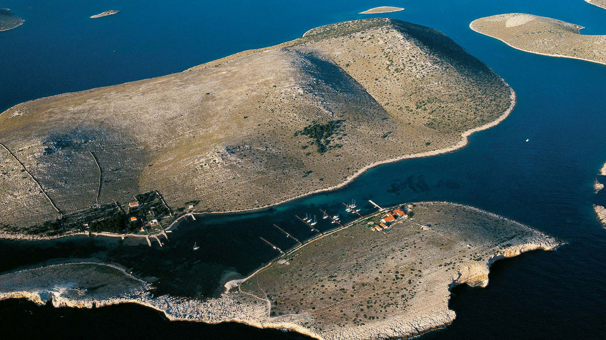
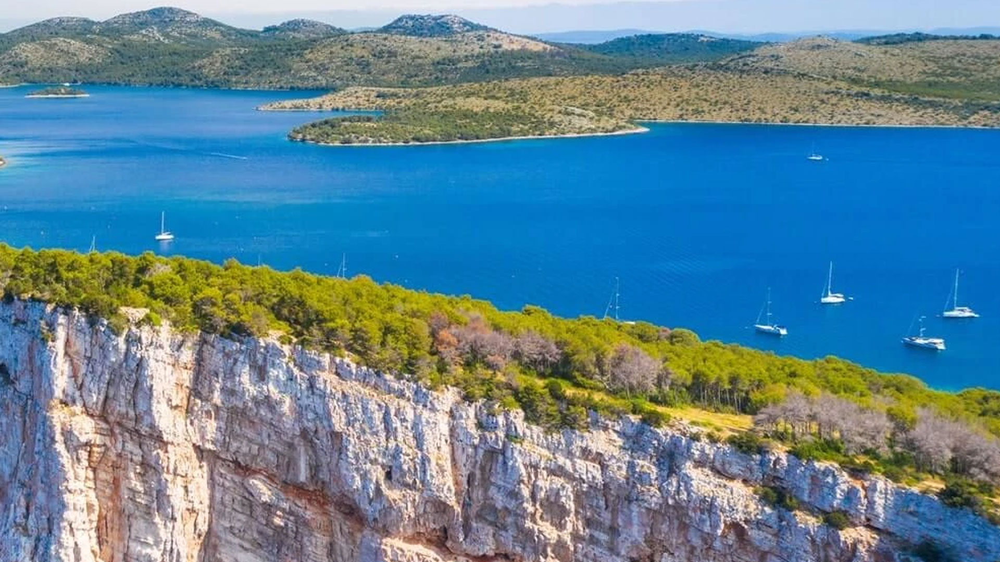

Kornati




Nacionalni park Kornati čini jedinstven otočni arhipelag smješten u središnjem dijelu Jadrana. Ovaj krajolik prepoznatljiv je po surovim vapnenačkim otocima, strmim liticama i širokim morskim prostranstvima. Kornati su često opisivani kao kameni labirint u moru, gdje se otočići nižu jedan za drugim, stvarajući prizore koji ostavljaju snažan dojam. Ovdje nema bujnih šuma ni velikih naselja, ali upravo ta ogoljena ljepota daje arhipelagu posebnu draž.
Kornatsko otočje sastoji se od brojnih otoka, otočića i hridi, a većina kopnene površine čine suhi krški oblici. Vegetacija je niska i prilagođena surovim uvjetima: kadulja, smilje i druge aromatične biljke stvaraju mirisnu sliku prostora. Ljeti se krajolik doima gotovo pust, ali u proljeće se otoci zazelene i ožive. Ta sezonska razlika čini Kornate zanimljivima u više razdoblja godine.
Jedan od najprepoznatljivijih elemenata Kornata su strme litice koje se uzdižu iz mora. Poznate kao krune ili klifovi, one su impresivne s morske strane, gdje se uzdižu gotovo okomito. Najviši klifovi dosežu nekoliko desetaka metara, a njihova svijetla boja u kontrastu s tamnoplavim morem stvara snažan vizualni dojam. Ove litice važna su i za ptice koje se na njima gnijezde, pa se ovdje mogu vidjeti brojne vrste galebova i drugih morskih ptica.
More oko Kornata posebno je vrijedno zbog svoje bistrine i bogatstva podvodnog svijeta. Podmorje skriva livade posidonije, raznovrsne ribe, školjke i koraljne zajednice. Ronjenje i snorkeling popularni su oblici istraživanja, jer omogućuju uvid u drugi, skriveni sloj parka. Morski ekosustav jednako je važan kao i kopneni, pa zaštita parka obuhvaća i morski prostor.
Kornati su kroz povijest bili povezani s čovjekom, ali na specifičan način. Ovdje su se stoljećima razvijali suhozidi, mali kameni pašnjaci i jednostavna pastirska skloništa. Poljoprivreda je bila skromna, ali je ostavila trag u obliku terasastih površina i kamenih ograda. Danas su ti elementi dio kulturne baštine otoka i svjedoče o prilagodbi čovjeka surovim uvjetima.
Jedan od simbola Kornata su i soline te mala polja maslina i smokava, koja pokazuju kako se u kršu ipak može živjeti. Iako je život na otocima težak, tradicija se zadržala kroz povremeni boravak lokalnih stanovnika i održavanje zemljišta. Posjetitelji često prepoznaju tu ljudsku dimenziju kao važan dio priče o Kornatima, jer se priroda i kultura ovdje nadopunjuju.
Doživljaj Kornata najčešće je povezan s morem. Većina posjetitelja dolazi brodom, što omogućuje da se park doživi iz perspektive koja mu i pripada. Plovidba između otoka otkriva stalno nove prizore, uske prolaze i otvorene uvale. Mirno more ujutro i zlatne boje zalaska sunca navečer stvaraju nezaboravne trenutke. Takav doživljaj često se opisuje kao osjećaj slobode i širine.
Klimatski uvjeti u parku tipični su za mediteransko područje: ljeta su suha i vruća, dok zime donose više vlage i blaže temperature. Bura je poznat vjetar koji oblikuje pejzaž, ali i podsjeća na snagu prirodnih sila. Upravo ti vjetrovi, zajedno s morem i solju, oblikuju vegetaciju i čine Kornate posebnim ekosustavom.
Zaštita Kornata važna je zbog osjetljivosti krških otoka i morskih staništa. Kretanje je regulirano, sidrenje je dopušteno samo na određenim mjestima, a ribolov je ograničen. Takva pravila omogućuju očuvanje ravnoteže i sprječavaju pretjerano opterećenje prostora. Park je primjer kako se priroda može čuvati, a istodobno omogućiti posjetiteljima iskustvo ovog jedinstvenog pejzaža.
Kornati imaju i specifičnu zvučnu atmosferu. Umjesto šumskih zvukova, ovdje prevladava šum mora, udari valova i povremeni krik ptica. Taj zvučni pejzaž stvara osjećaj potpune uronjenosti u prirodu, bez uobičajenih ljudskih zvukova. Za mnoge posjetitelje to je upravo ono što Kornate čini posebnima: tišina prekinuta samo prirodnim zvukovima.
Ugođaj Kornata često se opisuje kao mediteranska pustoš, ali u tom izrazu nema negativne konotacije. Riječ je o prostoru koji pokazuje suštinu mediteranskog krša, gdje se život odvija u skromnim uvjetima, ali s iznimnom snagom i ljepotom. Ovdje se može doživjeti priroda u najogoljenijem obliku, a to je iskustvo koje se rijetko nalazi u drugim parkovima.
Za one koji vole istraživati, Kornati nude i brojne male uvale i skrivene zaljeve. Takva mjesta često su nedostupna kopnom, pa se otkrivaju tek s mora. U tim uvalama more je posebno mirno, a tišina potpuna. Posjetitelji koji se ondje zaustave često kažu da su osjetili pravi duh Kornata, daleko od glavnih ruta.
Sunčeva svjetlost ovdje igra posebnu ulogu. Tijekom dana kamen se zagrijava i reflektira svjetlo, pa pejzaž dobiva gotovo srebrnasti sjaj. Navečer, kada sunce zalazi, otoci se boje u zlatne i narančaste tonove, a more postaje tamnije i smirenije. Ti kontrasti stvaraju snažan doživljaj i često su razlog zašto Kornati ostaju u sjećanju kao vizualno najdramatičniji park.
Na Kornatima se posebno osjeća snaga vjetra. Bura i jugo oblikuju more, ali i vegetaciju, pa su stabla često niska i prilagođena jakim udarima. Taj utjecaj vjetra vidljiv je u samom pejzažu, koji djeluje ogoljeno, ali istovremeno stabilno i čvrsto. Ovaj odnos između vjetra, mora i kamena daje Kornatima karakter koji se ne može zamijeniti s drugim otocima.
Kornati su i prostor učenja o suživotu čovjeka i prirode. Suhozidi, male kućice i tragovi poljoprivrede pokazuju kako su se ljudi prilagođavali surovim uvjetima. Iako danas taj život nije intenzivan, ostaci su i dalje vidljivi i podsjećaju na težak, ali kreativan odnos s krajolikom. Posjet parku stoga nije samo prirodni doživljaj, već i susret s poviješću otočnog života.
Promatranje Kornata s vidikovaca na većim otocima otkriva geometriju arhipelaga. Otoci djeluju kao rasuti komadi kamena u moru, ali svaki ima svoju liniju obale i karakter. Taj pogled pomaže razumjeti koliko je priroda slojevita, iako na prvi pogled djeluje jednostavno. Posjetitelji često ističu da tek s visine doista shvate razmjer i ljepotu ovog otočnog krajolika.
Za one koji vole sporiji ritam, Kornati nude priliku za mirno sidrenje i promatranje prirode bez žurbe. Zbog udaljenosti od kopna, osjećaj izolacije je izražen, ali upravo to daje posebnu vrijednost. U takvim trenucima more postaje glavni zvuk, a nebo najširi pogled. To je iskustvo koje ostaje dugo u sjećanju, jer podsjeća na jednostavnost i snagu prirode.
Kornatske staze na većim otocima kratke su, ali vrlo dojmljive. Hodanje po kamenjaru zahtijeva pažnju, a svaki korak otkriva novi detalj u teksturi tla i mirisu bilja. Takva šetnja nije duga, ali je intenzivna, jer se priroda promatra izbliza. Za mnoge posjetitelje to je način da osjete otok, ne samo s mora, već i neposredno pod nogama.
U toplijim mjesecima mirisi kadulje i smilja posebno su izraženi, a lagani vjetar ih nosi preko kamenjara. Taj mirisni doživljaj čini Kornate prepoznatljivima i često se veže uz uspomene na otoke. Mirisi, boje i zvukovi ovdje djeluju zajedno, pa se prostor doživljava svim osjetilima.
U tim trenucima lako je shvatiti zašto su Kornati mnogima simbol tihe, ali snažne ljepote Mediterana.
Za posjetitelje koji žele više od jednodnevnog izleta, Kornati nude mogućnost višednevnog boravka na brodu ili u malim uvalama. Takav način posjeta omogućuje dublje upoznavanje parka, promatranje izlaska i zalaska sunca te doživljaj noćnog neba bez svjetlosnog onečišćenja. Noći na Kornatima često ostaju u sjećanju kao poseban trenutak mira i povezanosti s morem.
Kornati su jedan od najprepoznatljivijih simbola hrvatskog otočnog svijeta. Njihova ljepota nije u raskoši, već u jednostavnosti i čistoj geometriji kamena i mora. Taj spoj stvara pejzaž koji je istodobno surov i privlačan, a upravo u tom kontrastu leži njegova vrijednost. Posjet Kornatima ostavlja snažan dojam i podsjeća na vrijednost očuvane prirode.